How to use the geneticae package
Statistical Tools for the Analysis of Multi-Environment Agronomic Trials
Julia Angelini
Marcos Prunello
Gerardo Cervigni
Centro de Estudios Fotosintéticos y Bioquímicos
Universidad Nacional de Rosario
Rosario, Argentina
Marcos Prunello
Gerardo Cervigni
Centro de Estudios Fotosintéticos y Bioquímicos
Universidad Nacional de Rosario
Rosario, Argentina
2026-04-17
Source:vignettes/a-tutorial.Rmd
a-tutorial.RmdGetting Started
Installing the package. To install the released
version of geneticae from CRAN:
install.packages("geneticae")You can install the development version from our GitHub repo with:
# install.packages("devtools")
devtools::install_github("jangelini/geneticae")Loading the package. Once the geneticae
package is installed, it needs to be loaded by:
Help files. Detailed information on
geneticae package functions can be obtained from help files
using help(package="geneticae"). The help file for a
function, for example imputation can be obtained using
?imputation or help(imputation).
Introduction
Understanding the relationship between crops performance and environment is a key problem for plant breeders and geneticists. In advanced stages of breeding programs, in which few genotypes are evaluated, multi-environment trials (MET) are one of the most used experiments. Such studies test a number of genotypes in multiple environments in order to identify the superior genotypes according to their performance. In these experiments, crop performance is modeled as a function of genotype (G), environment (E) and genotype-environment interaction (GEI). The presence of GEI generates differential genotypic responses in the different environments (Angelini et al., 2019; Crossa, 1990; Kang and Magari, 1996). Therefore appropriate statistical methods should be used to obtain an adequate GEI analysis, which is essential for plant breeders (Giauffret et al., 2000).
The average performance of genotypes through different environments can only be considered in the absence of GEI (Yan and Kang, 2003). However, GEI is almost always present and the comparison of the mean performance between genotypes is not enough. The most widely used methods to analyze MET data are based on regression models, analysis of variance (ANOVA) and multivariate techniques. In particular, two statistical models are widely used among plant breeders as they provide useful graphical tools for the study of GEI: the Additive Main effects and Multiplicative Interaction model (AMMI) (Kempton, 1984; Gauch, 1988) and the Site Regression Model (SREG) (Cornelius et al., 1996; Gauch and Zobel, 1997). However, these models are not always efficient enough to analyze MET data structure of plant breeding programs. They present serious limitations in the presence of atypical observations and missing values, which occur very frequently. To overcome this, several imputation alternatives, a robust AMMI (Rodrigues et al., 2016) and SREG alternative (Angelini et al., 2022) were recently proposed in literature.
The geneticae package was created to gather in one place
the most useful functions for this type of analysis and it also
implements new methodology which can be found in recent literature. More
importantly, geneticae is the first package to implement
the robust AMMI models proposed by Rodrigues et al. (2016), the robusts
SREG proposed by Angelini et al. (2022) and new imputation methods
proposed by Angelini et al. (2024). In addition, there is no need to
preprocess the data to use the geneticae package, as it the
case of some previous packages which require a data frame or matrix
containing genotype by environment means with the genotypes in rows and
the environments in columns. In this package, data in long format is
required. There is no restriction on columns names of genotypes,
environments, repetitions (if any) and phenotypic traits of interest.
Also, extra information that will not be used in the analysis may be
present in the dataset. Finally, geneticae offers a wide
variety of options to customize the biplots, which are part of the
graphical output of these methods.
Datasets
The geneticae package utilizes two datasets to
illustrate the methodology included to analyse MET data.
-
yan.winterwheatdataset: yield of 18 winter wheat varieties grown in nine environments in Ontario at 1993. Although four blocks or replicas in each environment were performed in the experiment, only yield mean for each variety and environment combination was available in the dataset obtained from the agridat package (Wright, 2020).
## gen env yield
## 1 Ann BH93 4.460
## 2 Ari BH93 4.417
## 3 Aug BH93 4.669
## 4 Cas BH93 4.732
## 5 Del BH93 4.390
## 6 Dia BH93 5.178-
plrvdataset: resistance study to PLRV (Patato Leaf Roll Virus) causing leaf curl. 28 genotypes were experimented at 6 locations in Peru. Each clone was evaluated three times in each environment, and yield, plant weight and plot were registered. This dataset is available ingeneticaeand was obtained from the agricolae package (de Mendiburu, 2020).
## Genotype Locality Rep WeightPlant WeightPlot Yield
## 1 102.18 Ayac 1 0.5100000 5.10 18.88889
## 2 104.22 Ayac 1 0.3450000 2.76 12.77778
## 3 121.31 Ayac 1 0.5425000 4.34 20.09259
## 4 141.28 Ayac 1 0.9888889 8.90 36.62551
## 5 157.26 Ayac 1 0.6250000 5.00 23.14815
## 6 163.9 Ayac 1 0.5120000 2.56 18.96296Statistical models for multi-environment trials
AMMI model
The AMMI model (Gauch, 1988) is widely used to analyse the effect of GEI. This model includes two stages. First, an ANOVA is performed to obtain estimates for the additive main effects of environments and genotypes. Secondly, the residuals from the ANOVA are arranged in a matrix with genotypes in the rows and environments in the columns and a singular value decomposition (SVD) is applied in order to explore patterns related to GEI, still present in the residuals. The result of the first two multiplicative terms of the SVD is often presented in a biplot called GE and represents a two-rank approximation of GEI effects.
The rAMMI() function returns the GE biplot. Data in long
format is required by this function, i.e. each row corresponds to one
observation and each column to one variable (genotype, environment,
repetition (if any) and the observed phenotype). If each genotype has
been evaluated more than once at each environment, the phenotypic mean
for each combination of genotype and environment is internally
calculated and then the model is estimated. Extra variables that will
not be used in the analysis may be present in the dataset. Missing
values are not allowed (but can be imputated, see below).
The GE biplot for yan.winterwheat dataset is shown in
Figure 1 along with the sentence used to obtain it. The first argument
is the input dataset, then the names of the columns in which the
necessary information to apply the technique is found and also the model
to be obtained are indicated. Optionally, the percentage of GEI
explained by the GE biplot can be added as a footnote with
footnote = T, as well as a tittle with
titles = T. In this example, BH93, KE93 and OA93 are the
environments that contribute the most to the interaction as their
vectors are the longest ones. The cultivars m12 and
Kat present similar interaction patterns (their markers are
close to each other in the biplot) and they are very different from
Ann and Aug, for example. The closeness between the
cultivar Dia and the environment BH93 indicates a strong
positive association between them, which means that BH93 is a extremely
favorable environment for that genotype. As OA93 and Luc
markers are opposite, this environment is considerably unfavorable for
that genotype. Finally, Cas and Reb are close to the
origin, which means that they adapt equally to all environments.
rAMMI_clasic <- rAMMIModel(yan.winterwheat, genotype = "gen", environment = "env",
response = "yield", type = "AMMI")
rAMMIPlot(rAMMI_clasic, titles = TRUE, footnote = TRUE)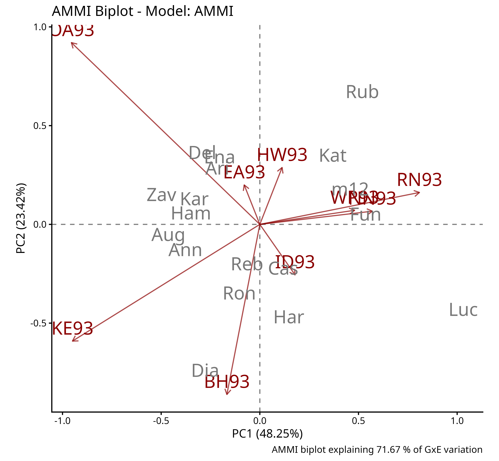
Figure 1: GE biplot based on yield data of 1993 Ontario winter wheat performance trials. The 71.66% of GE variability is explained by the first two multiplicative terms. Cultivars are shown in lowercase and environments in uppercase.
The AMMI model, in its standard form, assumes that no outliers are
present in the data. To overcome the problem of data contamination with
outlying observations, Rodrigues et al. (2016) proposed five robust AMMI
models, which can be obtained in two stages: (i) fitting a robust
regression model with an M-Huber estimator (Huber, 1981) to replace the
ANOVA model; and (ii) using a robust SVD or principal components
analysis (PCA) procedure to replace the standard SVD. Until now, robust
AMMI models were not available in any R package. All robust biplots
proposed by Rodrigues et al. (2016) can be obtained using
rAMMI(). The argument type can be used to
specify the type of model to be fitted ("rAMMI",
"hAMMI", "gAMMI", "lAMMI" or
"ppAMMI").0 Since the sample yan.winterwheat
dataset does not present outliers, the conclusions obtained with robust
biplots will not differ from those made with the classic biplot
(Rodrigues et al., 2016). Thus, no interpretation of the robust biplots
is presented in this tutorial.
Site Regression model
The Site Regression model (SREG, also called genotype
plus genotype-by-environment model or GGE model) is
another powerful tool for the analysis and interpretation of MET data in
breeding programs. In this case, an ANOVA is performed to obtain
estimates for the additive main effects of environments and a SVD is
performed on the residuals matrix in order to explore patterns related
to genotype (G) and GEI. However, ANOVA and SVD are sensitive to
atypical observations, which are common in MET. To overcome this
problem, three robust models were proposed by Angelini et al. (2022) to
obtain valid results even in the presence of outliers. The current
package implements these methods, allowing users to perform robust SREG
analysis easily. As yan.winterwheat dataset does not
present outliers, the conclusions obtained with robust biplots will not
differ from those made with the classic biplot (Angelini et al., 2022).
Thus, no interpretation of the robust biplots is presented in this
tutorial.
As rAMMI() function, GGEmodel() data needs
to be presented in a long format and repetitions or extra variables in
the dataset are allowed. All the combinations between genotypes and
environments must be present.
GGE1 <- rSREGModel(yan.winterwheat, genotype = "gen", environment = "env",
response = "yield")The output from GGEmodel() is a list with the following
elements:
-
model: method for fitting the SREG model:"SREG","CovSREG","hSREG"or"ppSREG". -
coordgenotype: plot coordinates for all genotypes in each component. -
coordenviroment: plot coordinates for all environments in each component. -
eigenvalues: vector of eigenvalues for each component. -
vartotal: overall variance. -
varexpl: percentage of variance explained by each component. -
labelgen: genotype names. -
labelenv: environment names. -
axes: axis labels. -
Data: centered input data. -
SVP: SVP method.
The result of the first two multiplicative terms of the SVD is often presented in a GGE biplot (Yan et al., 2000), which represents a rank-two approximation of the G + GEI effects. Plant breeders have found GGE biplots as an useful tools for the analysis of mega-environment (Yan et al., 2001; Yan and Rajcan, 2002) and genotype and environment evaluation (Bhan et al., 2005; Kang et al., 2006; Yan et al., 2007). The GGE biplot addresses many issues relative to genotype and test environment evaluation. Considering the average performance of each genotype, this plot can be used to evaluate specific and general adaptation. In addition, environments can be visually grouped according to their ability to discriminate among genotypes and their representativeness of other test environments. GGE biplot reveals the which-won-where pattern and allows to recommend specific genotypes for each environment (Yan and Tinker, 2005).
Using the output from GGEmodel(), GGEPlot()
builds several GGE biplots views, in which cultivars are shown in
lowercase and environments in uppercase. The plot also displays the
methods used for centering, scaling and SVD. Optionally, the percentage
of G + GEI explained by the two axes can be added as a footnote with
footnote = T, as well as a tittle with
titles = T.
A basic biplot is produced with the option type="Biplot"
(Figure 2). In this example the 78% of G + GE variability is explained
by the fist two multiplicative terms. The angles between genotypes
markers and environments vectors are considered to understand this plot.
Thus, for example, Kat performs below the average in all
environments, as it has an angle greater than
90
with all environments. On the other hand, Fun presents an
above-average performance in all locations except OA93 and KE93, as
indicated by the acute angles. The length of the environment vectors is
a measure of the environment’s ability to discriminate between
crops.
rSREGPlot(GGE1, type = "Biplot", footnote = F, titles = F)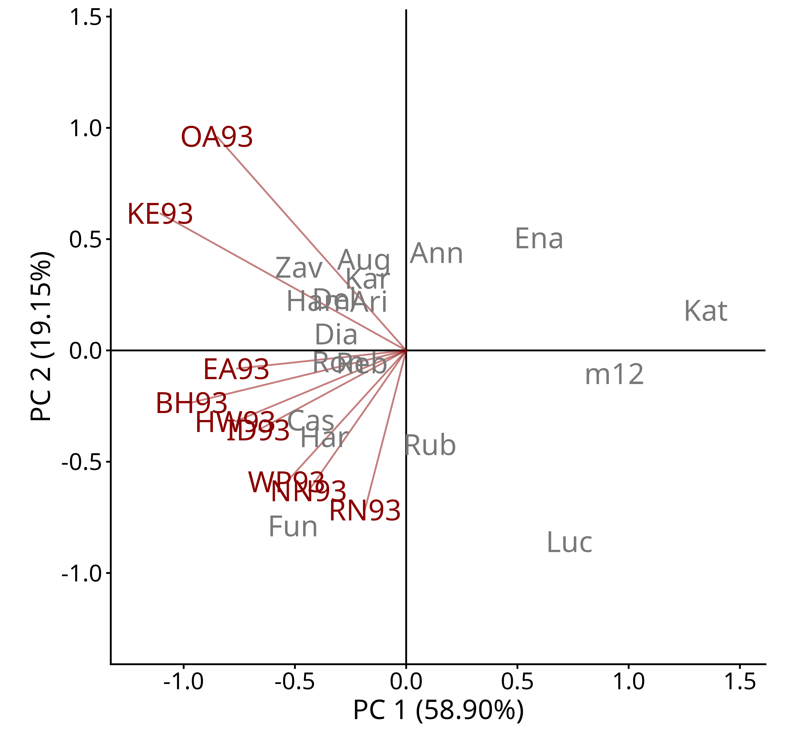
Figure 2: GGE biplot based on yield data of 1993 Ontario winter wheat performance trials. The scaling method used is symmetrical singular value partitioning (by default). The 78% of G + GE variability is explained by the first two multiplicative terms. Cultivars are shown in lowercase and environments in uppercase.
Breeders usually want to identify the most suitable cultivars for a
particular environment of interest, i.e., OA93. To do this with GGE
biplots, Yan and Kang (2003) suggest drawing a line that passes through
the environment marker and the biplot origin, which may be referred to
as the OA93 axis. The performance of the cultivars in this particular
environment can be ranked projecting them onto this axis. This can be
done by setting type = "Selected Environment" and providing
the name of the environment (OA93) in selectedE (Figure 3).
Thus, at OA93, the highest-yielding cultivar was Zav, and the
lowest-yielding cultivar was Luc. The line that passes through
the biplot origin and is perpendicular to the OA93 axis separates
genotypes that yielded above and below the mean in this environment.
rSREGPlot(GGE1, type = "Selected Environment", selectedE = "OA93",
footnote = F, titles = F)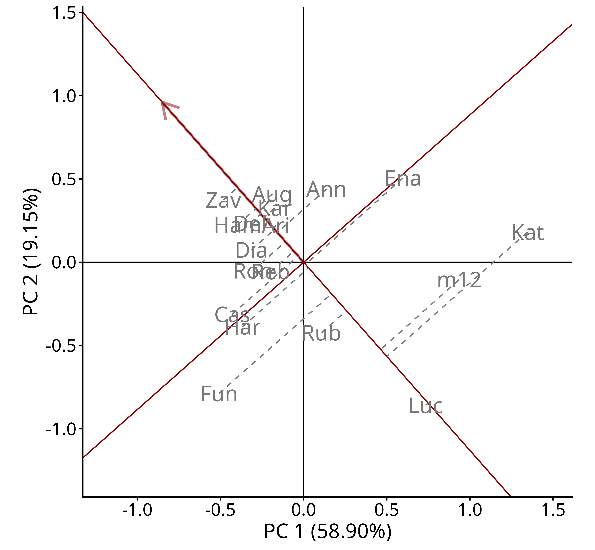
Figure 3: comparison of cultivar performance in a selected environment (OA93). The scaling method used is symmetrical singular value partitioning (by default). The 78% of G + GE variability is explained by the first two multiplicative terms.
Another goal of plant breeders is to determine which is the most
suitable environment for a genotype. Yan and Kang (2003) suggest
plotting a line that passes through the origin and a cultivar marker,
i.e., Kat. To obtain this GGE biplots view the argument
type = "Selected Genotype" and
selectedG = "Kat" must be indicated (Figure 4).
Environments are classified along the genotype axis in the direction
indicated by the arrow. The perpendicular axis separates the
environments in which the cultivar presented a performance below or
above the average. In this example, Kat presented a performance
below the average in all the environments studied.
rSREGPlot(GGE1, type = "Selected Genotype", selectedG = "Kat",
footnote = F, titles = F)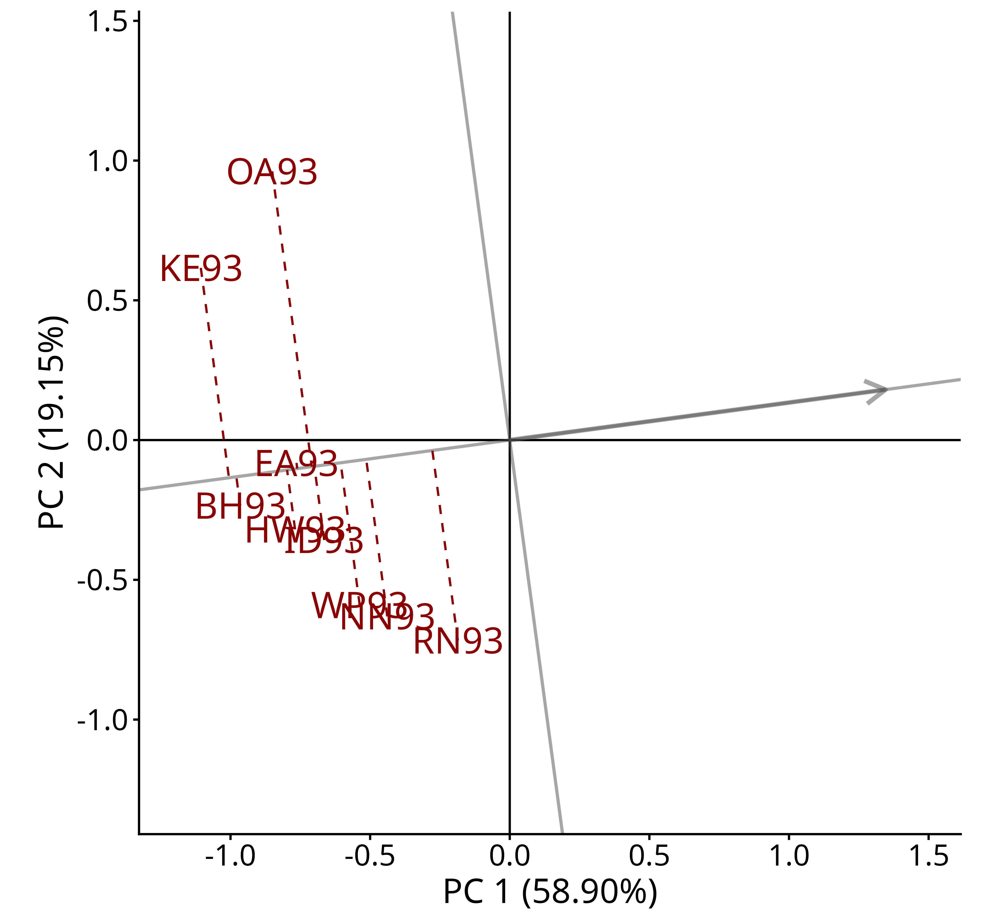
Figure 4: comparison of the performance of cultivar Luc in different environments. The scaling method used is symmetrical singular value partitioning (by default). The 78% of G + GE variability is explained by the first two multiplicative terms.
It is also possible to compare two cultivars, i.e. Kat and
Cas, linking them with a line and a segment perpendicular to
it. To obtain this GGE biplots view the argument
type = "Comparison of Genotype" and the genotypes to be
compared selectedG1 = "Kat" and
selectedG2 = "Cas" must be indicated (Figure 5).
Cas was more yielding than Kat in all environments as
they all are in the same side of the perpendicular line as
Cas.
rSREGPlot(GGE1, type = "Comparison of Genotype",
selectedG1 = "Kat", selectedG2 = "Cas",
footnote = F, titles = F, axis_expand = 1.5)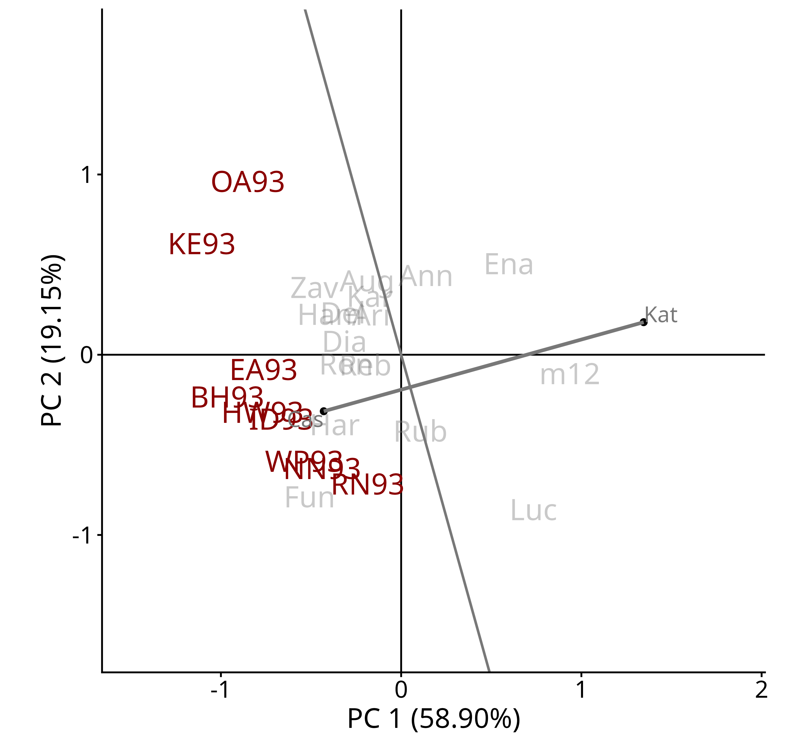
Figure 5: comparison of the cultivars Kat and Cas. The scaling method used is symmetrical singular value partitioning (by default). The 78% of G + GE variability is explained by the first two multiplicative terms. Cultivars are shown in lowercase and environments in uppercase.
The polygonal view of the GGE biplots provides an effective way to visualize the which-won-where pattern of MET data (Figure 6). Cultivars in the vertices of the polygon (Fun,Zav, Ena, Kat and Luc) are those with the longest vectors, in their respective directions, which is a measure of the ability to respond to environments. The vertex cultivars are, therefore, among the most responsive cultivars; all other cultivars are less responsive in their respective directions.
The dotted lines are perpendicular to the polygon sides and divide the biplot into mega-environments, each of which has a vertex cultivar, which is the one with the highest yield (phenotype) in all environments found in it. OA93 and KE93 are in the same sector, separated from the rest of the biplot by two perpendicular lines, and Zav is the highest-yielding cultivar in this sector. Fun is the highest-yielding cultivar in its sector, which contains seven environments, namely, EA93, BH93, HW93, ID93, WP93, NN93, and RN93. No environments fell in the sectors with Ena, Kat, and Luc as vertex cultivars. This indicates that these vertex cultivars were not the best in any of the test environments. Moreover, these cultivars were the poorest in some or all of the environments.
rSREGPlot(GGE1, type = "Which Won Where/What", footnote = F,
titles = F, axis_expand = 1.5)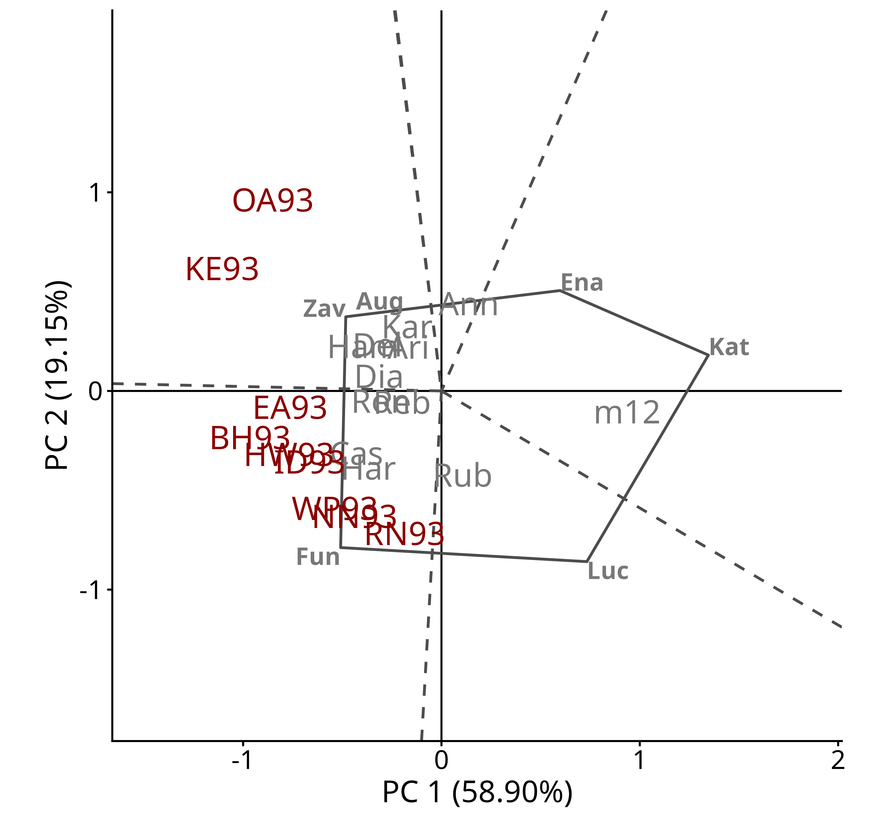
Figure 6: polygon view of the GGE biplot, showing which cultivars presented highest yield in each environment. The scaling method used is symmetrical singular value partitioning (by default). The 78% of G + GE variability is explained by the first two multiplicative terms. Cultivars are shown in lowercase and environments in uppercase.
Selecting cultivars within each mega-environments is an issue among plant breeders. Figure 6 clearly suggests that Zav is the best cultivar for OA93 and KE93, and Fun is the best cultivar for the other locations. However, breeders do not select a single cultivar in each megaenvironment. Instead, they evaluate all cultivars in order to get an idea of their performance (yield and stability).
In the GGE biplot it is also possible to visualize mean yield and
stability of genotypes in yield units per se (Figure 7 and 8).
The GGE biplot based on genotype-focused scaling, obtained
indicating SVP = "row" in GGEmodel(), provides
an useful way to visualize both mean performance and stability of the
tested genotypes. This is because the unit of both axes for the
genotypes is the original unit of the data.
Visualization of the mean and stability of genotypes is achieved by drawing an average environment coordinate (AEC). For example, Figure 7 shows the AEC for the mega-environment composed of he environments BH93, EA93, HW93, ID93, NN93, RN93, WP93. The abscissa represents the G effect, thus, the cultivars are ranked along the AEC abscissa. Cultivar Fun was clearly the highest-yielding cultivar, on average, in this mega-environment, followed by Cas and Har,and Kat was the poorest. The AEC ordinate approximate the GEI associated with each genotype, which is a measure of the variability or instability of the genotype. Rub and Dia are more variable and less stable than other cultivars, by the contrary, Cas, Zav, Reb, Del, Ari, and Kar, were more stable.
data <- yan.winterwheat[yan.winterwheat$env %in% c("BH93", "EA93","HW93", "ID93",
"NN93", "RN93", "WP93"), ]
data <- droplevels(data)
GGE2 <- rSREGModel(data, genotype = "gen", environment = "env",
response = "yield", SVP = "row")
rSREGPlot(GGE2, type = "Mean vs. Stability", footnote = F, titles = F, sizeEnv = 0)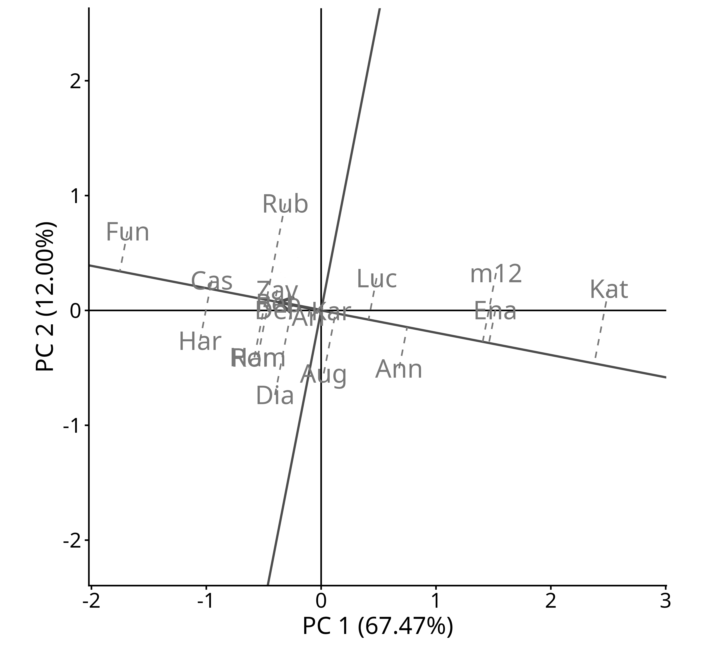
Figure 7: average environment view of the GGE biplot based on genotype-focused scaling, showing mean yield and stability of genotypes.
Figure 8 compares the cultivars to the “ideal” one with the highest yield and absolute stability. This ideal cultivar is represented by a small circle and is used as a reference, as it rarely exists. The distance between cultivars and the ideal one can be used as a measure of convenience. Concentric circles help to visualize these distances. In the example, Fun is the closest one to the ideal crop, and therefore the most desirable one, followed by Cas and Hay, which in turn are followed by Rum, Ham, Rub, Zav, Del and Reb, etc.
rSREGPlot(GGE2, type = "Ranking Genotypes", footnote = F, titles = F, sizeEnv = 0)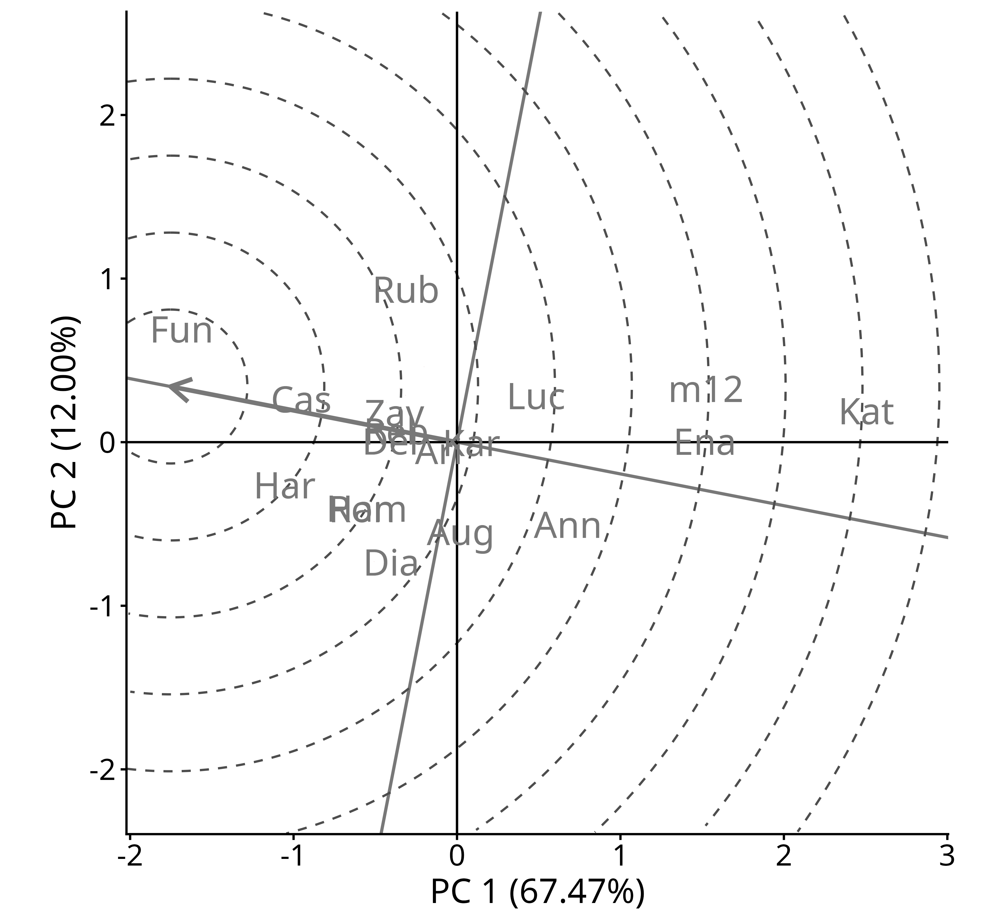
Figure 8: Classification of genotypes with respect to the ideal genotype. Genotype-focused scaling is used.
Although METs are performed to study cultivars, they are equally
useful for the analysis of the environments. This includes several
aspects: (i) evaluating whether the target region belongs to one or more
megaenvironments; (ii) identifying better test environments; (iii)
detecting redundant environments that do not provide additional
information on cultivars; and (iv) determining environments that can be
used for indirect selection. To obtain GGE biplots for comparing
environments the environment-focused scaling should be used as
is most informative of interrelationships among them (Figure 9 and 10).
This is obtained indicatig SVP = "column" in
GGEmodel().
In Figure 9 environments are connected to the origin through vectors, allowing us to understand the interrelationships between them. The coefficient of correlation between two environments it is approximated by the cosine of the angle formed by the respective vectors. In this example the relation between the environments for the mega-environment with BH93, EA93, HW93, ID93, NN93, RN93 and WP93 is considered. The angle between the vectors for the environments NN93 and WP93 is approximately 10; therefore, they are closely related; while RN93 and BH93 present a weak negative correlation since the angle is slightly greater than 90. The cosine of the angles does not translate precisely into coefficients of correlation, since the biplot does not explain all the variability in the dataset. However, they are informative enough to understand the interrelationship between test environments.
GGE3 <- rSREGModel(data, genotype = "gen", environment = "env",
response = "yield", SVP = "column")
rSREGPlot(GGE3, type = "Relationship Among Environments", footnote = F, titles = F)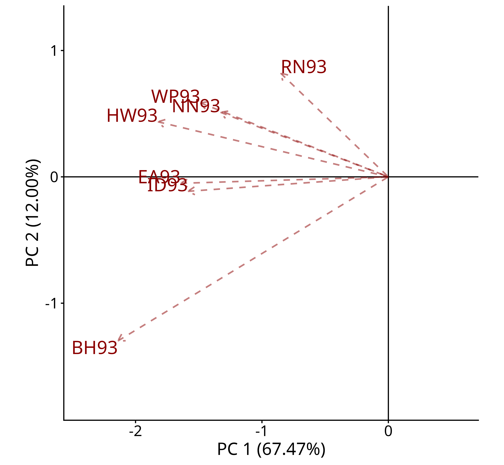
Figure 9: Relationship between environments. Environment-focused scaling is used.
Discrimination ability as well as representativeness with respect to the target environment are fundamental measures for an environment. An ideal test environment should be both discriminating and representative. If it does not have the ability to discriminate, it does not provide information on cultivars and is therefore of no use. At the same time, if it is not representative, not only does it lack usefulness but it can also provide biased information on the evaluated cultivars.
To visualize these measurements, an average environment coordinate is defined and the center of a set of concentric circles represents the ideal environment. Figure 10 shows the GGE biplots view for the mega-environment with BH93, EA93, HW93, ID93, NN93, RN93 and WP93. The angle between the vector of an environment and the AEC provides a measure of representativeness. Therefore, EA93 and ID93 are the most representative, while RN93 and BH93 are the least representative of the average environment, when the mega-environment is analyzed. On the other hand, an environment to be discriminative must be close to the ideal environment. HW93 is the closest to ideal environment and therefore the most desirable of the mega-environment, followed by EA93 and ID93. By the contrary, RN93 and BH93 were the least desirable test environments of this mega-environment.
rSREGPlot(GGE3, type = "Ranking Environments", footnote = F, titles = F)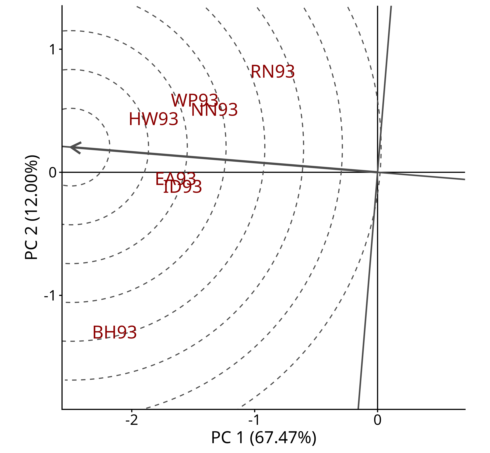
Figure 10: classification of environments with respect to the ideal environment. Environment-focused scaling is used.
Robust Site Regression model
While the previous example used a dataset without contamination, MET
data often contain atypical observations due to environmental stress,
pests, or measurement errors. To illustrate the robust capabilities of
the package, we refer to the study by Angelini et al. (2022) using the
lavoranti.eucalyptus dataset, available in the agridat
package (Wright 2020). In this case, a distance-distance plot identified
five atypical genotypes (1, 2, 21, 22, and 24). As noted by Angelini et
al. (2022), when outliers are present, the first PC eigenvalues in the
classic SREG model are often overestimated. This occurs because standard
SREG uses measures of variability that are highly influenced by extreme
values; consequently, outliers in the direction of the first principal
axes inflate the corresponding variances and artificially increase their
proportion of explained variability. In this context, the high
percentage of variability explained by a classic biplot can be spurious,
reflecting the presence of outliers rather than the actual main
structure of the data. The package allows fitting robust alternatives to
overcome this inflation by simply changing the method argument. The
following code compares the classic SREG with the robust approaches:
library(patchwork)
library(ggplot2)
data("lavoranti.eucalyptus")
# Bellthorpe
lavoranti_Bellthorpe <- droplevels(subset(lavoranti.eucalyptus, origin=="Bellthorpe"))
Nenv <-length(levels(lavoranti_Bellthorpe$loc))
Ngen <- length(levels(lavoranti_Bellthorpe$gen))
lavoranti_Bellthorpe$genot <- rep(1:Ngen, Nenv)
lavoranti_Bellthorpe$genot <- as.factor(lavoranti_Bellthorpe$genot)
# SREG Classic
SREG_classic <- rSREGModel(lavoranti_Bellthorpe, genotype = "genot",
environment = "loc", response = "height",
model = "SREG")
# hSREG
hSREG <- rSREGModel(lavoranti_Bellthorpe, genotype = "genot",
environment = "loc", response = "height",
model = "hSREG")
# CovSREG
CovSREG <- rSREGModel(lavoranti_Bellthorpe, genotype = "genot",
environment = "loc", response = "height",
model = "hSREG")
# ppSREG
ppSREG <- rSREGModel(lavoranti_Bellthorpe, genotype = "genot",
environment = "loc", response = "height",
model = "ppSREG")
# Graphs
p1 <- rSREGPlot(SREG_classic, footnote = F, titles = T)
p2 <- hSREG_plot <- rSREGPlot(hSREG, footnote = F, titles = T)
p3 <- CovSREG_plot <- rSREGPlot(CovSREG, footnote = F, titles = T)
p4 <- ppSREG_plot <- rSREGPlot(ppSREG, footnote = F, titles = T)
grafico_robusto_SREG <- (p1 + p2) / (p3 + p4) +
plot_annotation(tag_levels = 'A') &
theme(plot.tag = element_text(size = 18, face = "bold"))
grafico_robusto_SREG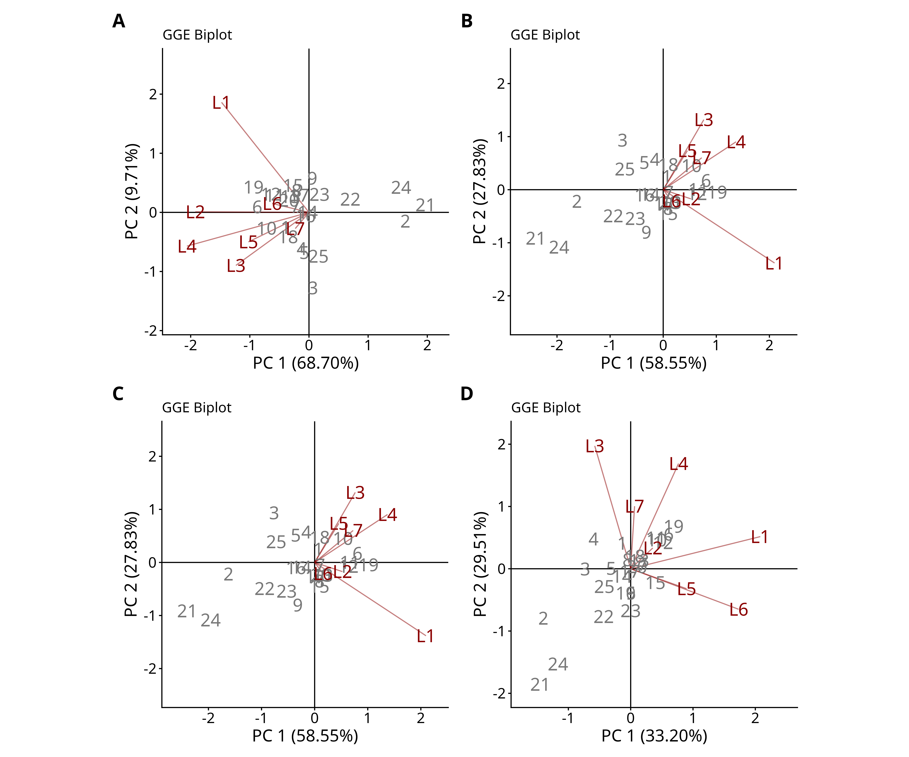
Figure 11: GGE biplot based on the height of 25 progenies of Eucalyptus grandis from trials carried out in seven environments in the southern and southeastern regions of Brazil. The scaling method used is symmetrical singular value partitioning. SREG (A), hSREG (B), CovSREG (C), and ppSREG (D).
The display of genotypes and environments shows a different behavior for the classic SREG biplot. The standard SREG biplot shows an overlap of genotype markers in the direction of the first PC due to the dominant effect of observations 2, 21, 22 and 24, which difficult the interpretation and analysis of MET data (Figure 11 A). For example, as the length of the environ mental vectors is a measure of the environment’s ability to discriminate between cultivars, we can conclude that environment 2 was one of the most discriminating when the classical biplot is analyzed. By the contrary, it is near the biplot origin when the robust ones were interpreted, indicating the lack of discriminating ability; that is, it does not provide information about the cultivars, and therefore, the test environment is useless (Figure 11 B–D). This contradiction occurs because of the influence of genotypes 2, 21, 22 and 24 which have the poorest performance in that environment (while all the genotypes rendering above 22.60 in that environment give 17.79, 19.77, 20.45 and 20.36, respectively). Outliers concentrated in a single environment may be the result of a particular climatic event or some pests/diseases that have influenced the expected performance. When considering the robust alternatives, the impact of the outlying observations is reduced leading to an easier interpretation, with genotype markers being more dispersed. Therefore, the use of robust alternatives allowed the inclusion of those genotypes in the analysis, reducing their influence, and consequently not distorting the results.
Imputation methods
One major limitation of the AMMI and SREG models is that they require
a complete two-way data table. Although METs are designed so that all
genotypes are evaluated in all environments, missing values are very
common due to measurement errors or destruction of plants by animals,
floods or harvest problems. In addition, genotypes might be incorporated
or discarded during the study because of their promising or poor
performance. The imputation() function includes several
methods to overcome the problem of missing data, some of which have been
recently published and were not available in any R package until now,
such as the recently proposed EM-SREG and EM-bSREG methods (Angelini et
al., 2024). To present an example, some observations from the complete
yan.winterwheat are deleted:
# Generating missing data
yan.winterwheat[1,3] <- NA
yan.winterwheat[3,3] <- NA
yan.winterwheat[2,3] <- NATo impute missing values using the methods proposed by Angelini et
al. (2024) "EM-SREG" and "EM-bSREG", use the
following code:
imputation(yan.winterwheat, genotype = "gen", environment = "env",
response = "yield", type = "EM-SREG")## BH93 EA93 HW93 ID93 KE93 NN93 OA93 RN93 WP93
## Ann 3.894037 4.150 2.849 3.084 5.940 4.450 4.351 4.039 2.672
## Ari 4.387588 4.771 2.912 3.506 5.699 5.152 4.956 4.386 2.938
## Aug 4.252460 4.578 3.098 3.460 6.070 5.025 4.730 3.900 2.621
## Cas 4.732000 4.745 3.375 3.904 6.224 5.340 4.226 4.893 3.451
## Del 4.390000 4.603 3.511 3.848 5.773 5.421 5.147 4.098 2.832
## Dia 5.178000 4.475 2.990 3.774 6.583 5.045 3.985 4.271 2.776
## Ena 3.375000 4.175 2.741 3.157 5.342 4.267 4.162 4.063 2.032
## Fun 4.852000 4.664 4.425 3.952 5.536 5.832 4.168 5.060 3.574
## Ham 5.038000 4.741 3.508 3.437 5.960 4.859 4.977 4.514 2.859
## Har 5.195000 4.662 3.596 3.759 5.937 5.345 3.895 4.450 3.300
## Kar 4.293000 4.530 2.760 3.422 6.142 5.250 4.856 4.137 3.149
## Kat 3.151000 3.040 2.388 2.350 4.229 4.257 3.384 4.071 2.103
## Luc 4.104000 3.878 2.302 3.718 4.555 5.149 2.596 4.956 2.886
## m12 3.340000 3.854 2.419 2.783 4.629 5.090 3.281 3.918 2.561
## Reb 4.375000 4.701 3.655 3.592 6.189 5.141 3.933 4.208 2.925
## Ron 4.940000 4.698 2.950 3.898 6.063 5.326 4.302 4.299 3.031
## Rub 3.786000 4.969 3.379 3.353 4.774 5.304 4.322 4.858 3.382
## Zav 4.238000 4.654 3.607 3.914 6.641 4.830 5.014 4.363 3.111
imputation(yan.winterwheat, genotype = "gen", environment = "env",
response = "yield", type = "EM-bSREG")## BH93 EA93 HW93 ID93 KE93 NN93 OA93 RN93 WP93
## Ann 4.016695 4.150 2.849 3.084 5.940 4.450 4.351 4.039 2.672
## Ari 4.419043 4.771 2.912 3.506 5.699 5.152 4.956 4.386 2.938
## Aug 4.327194 4.578 3.098 3.460 6.070 5.025 4.730 3.900 2.621
## Cas 4.732000 4.745 3.375 3.904 6.224 5.340 4.226 4.893 3.451
## Del 4.390000 4.603 3.511 3.848 5.773 5.421 5.147 4.098 2.832
## Dia 5.178000 4.475 2.990 3.774 6.583 5.045 3.985 4.271 2.776
## Ena 3.375000 4.175 2.741 3.157 5.342 4.267 4.162 4.063 2.032
## Fun 4.852000 4.664 4.425 3.952 5.536 5.832 4.168 5.060 3.574
## Ham 5.038000 4.741 3.508 3.437 5.960 4.859 4.977 4.514 2.859
## Har 5.195000 4.662 3.596 3.759 5.937 5.345 3.895 4.450 3.300
## Kar 4.293000 4.530 2.760 3.422 6.142 5.250 4.856 4.137 3.149
## Kat 3.151000 3.040 2.388 2.350 4.229 4.257 3.384 4.071 2.103
## Luc 4.104000 3.878 2.302 3.718 4.555 5.149 2.596 4.956 2.886
## m12 3.340000 3.854 2.419 2.783 4.629 5.090 3.281 3.918 2.561
## Reb 4.375000 4.701 3.655 3.592 6.189 5.141 3.933 4.208 2.925
## Ron 4.940000 4.698 2.950 3.898 6.063 5.326 4.302 4.299 3.031
## Rub 3.786000 4.969 3.379 3.353 4.774 5.304 4.322 4.858 3.382
## Zav 4.238000 4.654 3.607 3.914 6.641 4.830 5.014 4.363 3.111The other methods available in geneticae are:
"EM-SREG", "EM-bSREG", "EM-SVD",
"Gabriel", "WGabriel" and
"EM-PCA".
References
Angelini, J., Faviere, G. S., Bortolotto, E. B., Arroyo, L., Valentini, G. H., and Domingo Lucio Cervigni, G. 2019. Biplot pattern interaction analysis and statistical test for crossover and non-crossover genotype-by-environment interaction in peach. Scientia Horticulturae, 252, 298–309.
Angelini, J., Faviere, G. S., Bortolotto, E. B., Domingo Lucio Cervigni, G, and Quaglino, M. B. 2022. Handling outliers in multi-environment trial data analysis: in the direction of robust SREG model. Journal of Crop Improvement.
Angelini, J., Domingo Lucio Cervigni, G, and Quaglino, M. B. 2024. New imputation methodologies for genotype‐by‐environment data: an extensive study of properties of estimators. Euphytica.
Bhan, M.K., Pal, S., Rao, B.L., Dhar, A.K., and Kang, M.S. 2005. GGE biplot analysis of oil yield in lemongrass. Journal of New Seeds, 7, 127–139.
Cornelius, P.L., J. Crossa, and M.S. Seyedsadr. 1996. Statistical tests and estimates of multiplicative models for GE interaction, p. 199–234. In: M.S. Kang and H.G. Gauch, Jr. (Eds.), Genotype-by-environment interaction, CRC Press, Boca Raton, FL.
Crossa, J. 1990. Statistical Analyses of Multilocation Trials. Advances in Agronomy, 55–85.
Dumble, S. 2017. GGEBiplots: GGE Biplots with ‘ggplot2’. R package version 0.1.1. doi: https://CRAN.R-project.org/package=GGEBiplots
de Mendiburu, F. 2020. agricolae: Statistical Procedures for Agricultural Research. R package version 1.3-2. https://CRAN.R-project.org/package=agricolae
Gauch, H.G., Jr. 1988. Model selection and validation for yield trials with interaction, Biometrics, 44, 705–715.
Gauch H.G. and R.W. Zobel. 1997. Identifying mega-environments and targeting genotypes. Crop Science, 37, 311–326.
Giauffret, C., Lothrop, J., Dorvillez, D., Gouesnard, B., and Derieux, M., 2000. Genotype x environment interactions in maize hybrids from temperate or highland tropical origin. Crop Science, 40, 1004-1012.
Huber, P.J. 1981. Robust Statistics. Wiley, New York.
Kang, M.S., Aggarwal, V.D., and Chirwa, R.M. 2006. Adaptability and stability of bean cultivars as determined via yield-stability statistic and GGE biplot analysis. Journal of Crop Improvement, 15, 97–120. doi: https://doi.org/10.1300/J411v15n01_08
Kang, M.S. and Magari, R. 1996. New developments in selecting for phenotypic stability in crop breeding, p. 1–14. In: M.S. Kang and H.G. Gauch, Jr. (Eds.), Genotype-by-environment interaction, CRC Press, Boca Raton, FL.
Kempton, R.A. 1984. The use of biplots in interpreting variety by environment interactions. The Journal of Agricultural Science, 103, 123–135. doi: https://doi.org/10.1017/S0021859600043392
Rodrigues, P.C., Monteiro, A., and Lourenço, V.M. 2016. A robust AMMI model for the analysis of genotype-by-environment data. Bioinformatics,32, 58–66. doi: https://doi.org/10.1093/bioinformatics/btv533
Wright, K. 2020. agridat: Agricultural Datasets. R package version 1.17. https://CRAN.R-project.org/package=agridat
Yan, W., Cornelius, P.L., Crossa, J., and Hunt, L.A. 2001. Two types of GGE biplots for analyzing multi-environment trial data. Crop Science, 41, 656–663.
Yan, W., Hunt, L.A., Sheng, Q., and Szlavnics, Z. 2000. Cultivar evaluation and mega-environment investigation based on the GGE biplot. Crop Science, 40, 597–605.
Yan, W. and Kang, M.S. 2003. GGE Biplot Analysis: A Graphical Tool for Breeders, Geneticists, and Agronomists. CRC Press, Boca Raton, FL.
Yan, W., Kang, M.S., Ma, B., Woods, S., and Cornelius, P.L. 2007. GGE Biplot vs. AMMI analysis of genotype-by-environment data. Crop Science, 7, 641–653.
Yan, W. and Rajcan, I. 2002. Biplot analysis of sites and trait relations of soybean in Ontario, Crop Science, 42, 11–20.
Yan, W. and Tinker, N.A. 2005. An integrated biplot system for displaying, interpreting, and exploring genotype 9 environment interaction. Crop Science, 45, 1004–1016.
Session Info
## R version 4.3.3 (2024-02-29)
## Platform: x86_64-pc-linux-gnu (64-bit)
## Running under: Linux Mint 22.2
##
## Matrix products: default
## BLAS: /usr/lib/x86_64-linux-gnu/blas/libblas.so.3.12.0
## LAPACK: /usr/lib/x86_64-linux-gnu/lapack/liblapack.so.3.12.0
##
## locale:
## [1] LC_CTYPE=es_AR.UTF-8 LC_NUMERIC=C
## [3] LC_TIME=es_AR.UTF-8 LC_COLLATE=es_AR.UTF-8
## [5] LC_MONETARY=es_AR.UTF-8 LC_MESSAGES=es_AR.UTF-8
## [7] LC_PAPER=es_AR.UTF-8 LC_NAME=C
## [9] LC_ADDRESS=C LC_TELEPHONE=C
## [11] LC_MEASUREMENT=es_AR.UTF-8 LC_IDENTIFICATION=C
##
## time zone: America/Argentina/Cordoba
## tzcode source: system (glibc)
##
## attached base packages:
## [1] stats graphics grDevices utils datasets methods base
##
## other attached packages:
## [1] ggplot2_4.0.1 patchwork_1.3.2 agridat_1.26 geneticae_1.0.1
## [5] dplyr_1.1.4
##
## loaded via a namespace (and not attached):
## [1] Rdpack_2.6.4 rlang_1.1.7 magrittr_2.0.4
## [4] otel_0.2.0 compiler_4.3.3 systemfonts_1.3.1
## [7] vctrs_0.6.5 pkgconfig_2.0.3 shape_1.4.6.1
## [10] fastmap_1.2.0 backports_1.5.0 labeling_0.4.3
## [13] rmarkdown_2.30 nloptr_2.2.1 ragg_1.5.2
## [16] missMDA_1.20 purrr_1.2.1 xfun_0.55
## [19] glmnet_4.1-10 jomo_2.7-6 cachem_1.1.0
## [22] jsonlite_2.0.0 flashClust_1.01-2 pan_1.9
## [25] tweenr_2.0.3 broom_1.0.11 parallel_4.3.3
## [28] cluster_2.1.6 R6_2.6.1 bslib_0.9.0
## [31] RColorBrewer_1.1-3 boot_1.3-30 rrcov_1.7-7
## [34] rpart_4.1.23 jquerylib_0.1.4 estimability_1.5.1
## [37] Rcpp_1.1.1 iterators_1.0.14 knitr_1.51
## [40] Matrix_1.6-5 splines_4.3.3 nnet_7.3-19
## [43] tidyselect_1.2.1 rstudioapi_0.18.0 yaml_2.3.12
## [46] doParallel_1.0.17 codetools_0.2-19 lattice_0.22-5
## [49] tibble_3.3.1 Biobase_2.62.0 withr_3.0.2
## [52] S7_0.2.1 evaluate_1.0.5 desc_1.4.3
## [55] survival_3.5-8 polyclip_1.10-7 pillar_1.11.1
## [58] mice_3.19.0 DT_0.34.0 foreach_1.5.2
## [61] stats4_4.3.3 reformulas_0.4.3.1 pcaPP_2.0-5
## [64] generics_0.1.4 scales_1.4.0 minqa_1.2.8
## [67] xtable_1.8-8 leaps_3.2 glue_1.8.0
## [70] emmeans_2.0.1 scatterplot3d_0.3-44 tools_4.3.3
## [73] robustbase_0.99-6 lme4_1.1-38 fs_2.0.1
## [76] mvtnorm_1.3-3 grid_4.3.3 tidyr_1.3.2
## [79] rbibutils_2.4 nlme_3.1-164 ggforce_0.5.0
## [82] cli_3.6.5 textshaping_1.0.5 corpcor_1.6.10
## [85] pcaMethods_1.94.0 gtable_0.3.6 DEoptimR_1.1-4
## [88] sass_0.4.10 digest_0.6.39 BiocGenerics_0.48.1
## [91] ggrepel_0.9.6 FactoMineR_2.13 htmlwidgets_1.6.4
## [94] farver_2.1.2 htmltools_0.5.9 pkgdown_2.2.0
## [97] lifecycle_1.0.5 multcompView_0.1-10 mitml_0.4-5
## [100] MASS_7.3-60.0.1